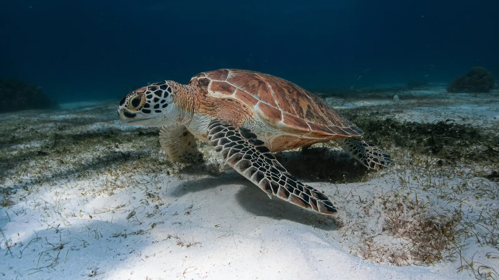
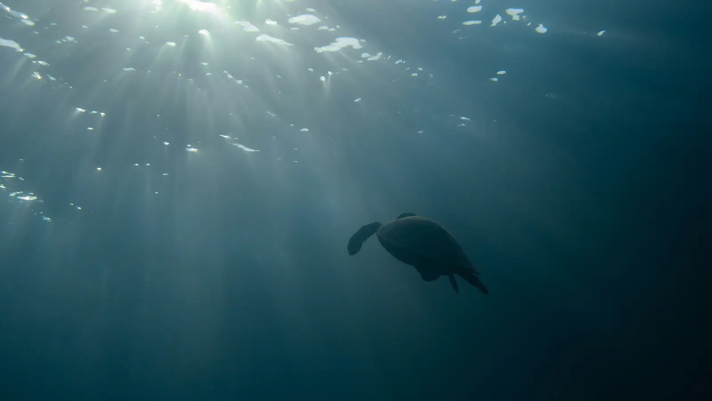
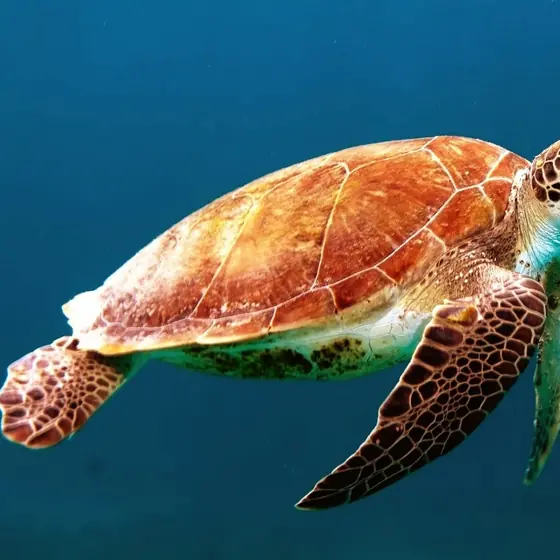
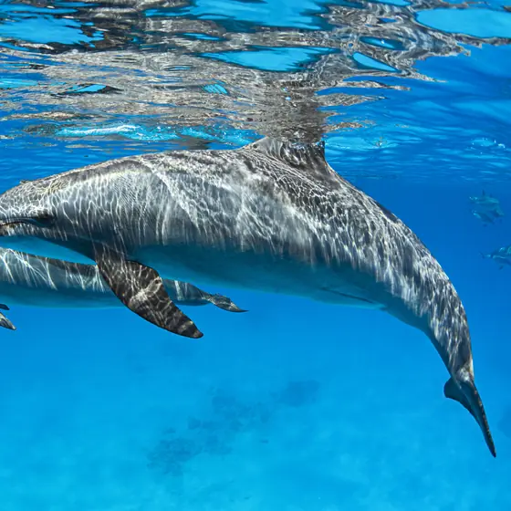
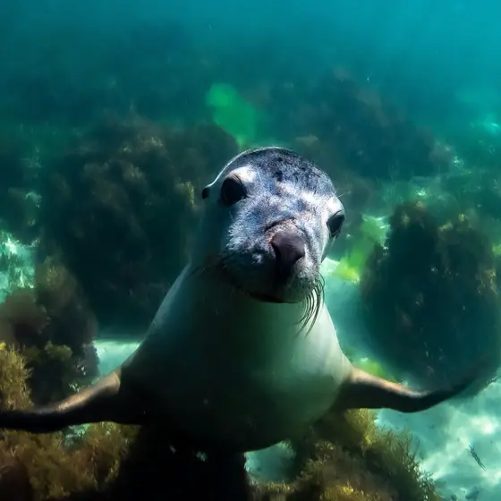
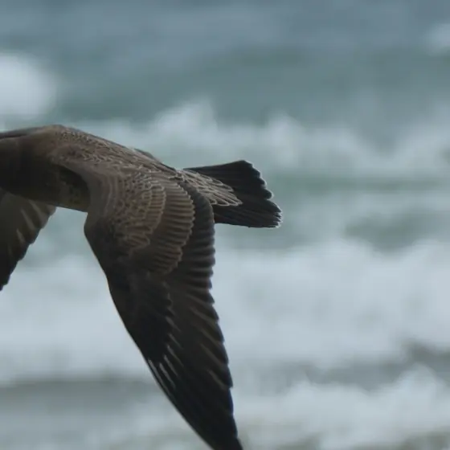
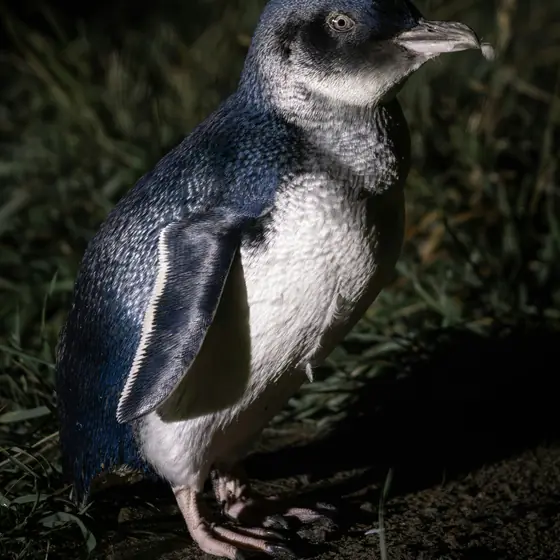
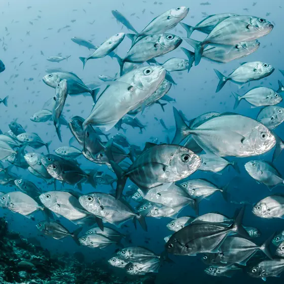

Give to the trust
CHART is endorsed as a Deductible Gift Recipient, so gifts of $2 or more may be tax deductible in Australia.
Ways to giveCoffs Harbour · New South Wales
A registered charity funding the rescue and rehabilitation of marine wildlife, so more of them make it back to the blue.
5 m The shallows · Who we are
Coffs Harbour Animal Rescue Trust, CHART for short, is a registered charity in Coffs Harbour, looking out over the Solitary Islands Marine Park. It exists to support the rescue and rehabilitation of marine wildlife.
“Rescue and rehab of marine wildlife.”
18 m The reef · The journey
Every rescue is a journey with one destination. Drag the turtle home.



Stranded, injured or tangled. The first job is getting a marine animal out of danger and into careful hands.
Time, care and patience. Rehabilitation gives an animal the chance to heal and grow strong again.
The best part. When it is ready, it goes home, back to the blue.
40 m Open blue · How we help
The trust raises funds and puts them towards the rescue and rehabilitation of marine wildlife. One purpose, kept simple. These are its own figures for the year to 30 June 2025.
$48,300 in donations
Every dollar of the trust’s income that year came from gifts by people who care about the coast and its wildlife.
$71,430 in grants and donations
Paid out for use in Australia, towards the rescue and rehabilitation of marine wildlife.
Animals that recover get their best chance at a return to the sea.
120 m Mid water · Who it is for
Turtles and dolphins, seals and seabirds, little penguins and fish. Send a sonar ping and see who answers.

Sea turtle
Dolphin
Seal
Seabird
Little penguin
Fish shoal400 m The deep · Ways to help
Down here, every small light counts. Move through the dark and leave a trail.
CHART is endorsed as a Deductible Gift Recipient, so gifts of $2 or more may be tax deductible in Australia.
Ways to giveRaise money for the trust, or give your time. Ask first and the trust will help you set it up.
Get involvedShare the trust with someone who loves the Coffs Coast and the wildlife in its waters.
Registered address: 65 Orlando St, Coffs Harbour NSW 2450.
manager@ccws.org.au
0468 248 207

Crypto donation partner
Origin Labs takes CHART’s work to new supporters across the crypto community, so more marine wildlife makes it back to the blue. Give in crypto
Registered with the ACNC, ABN 49 974 310 425